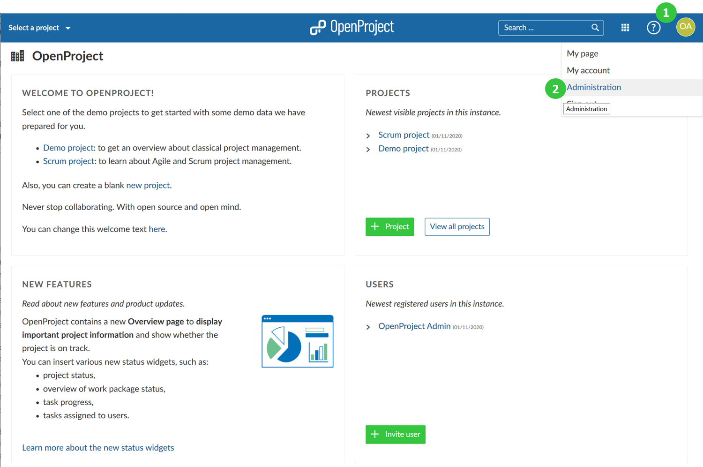
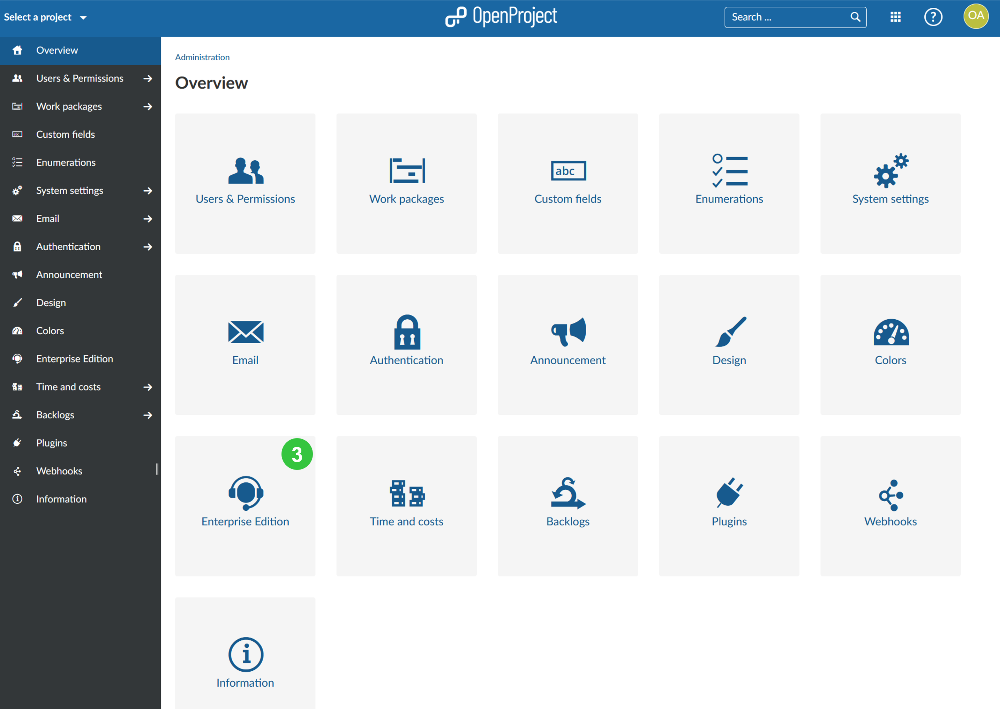
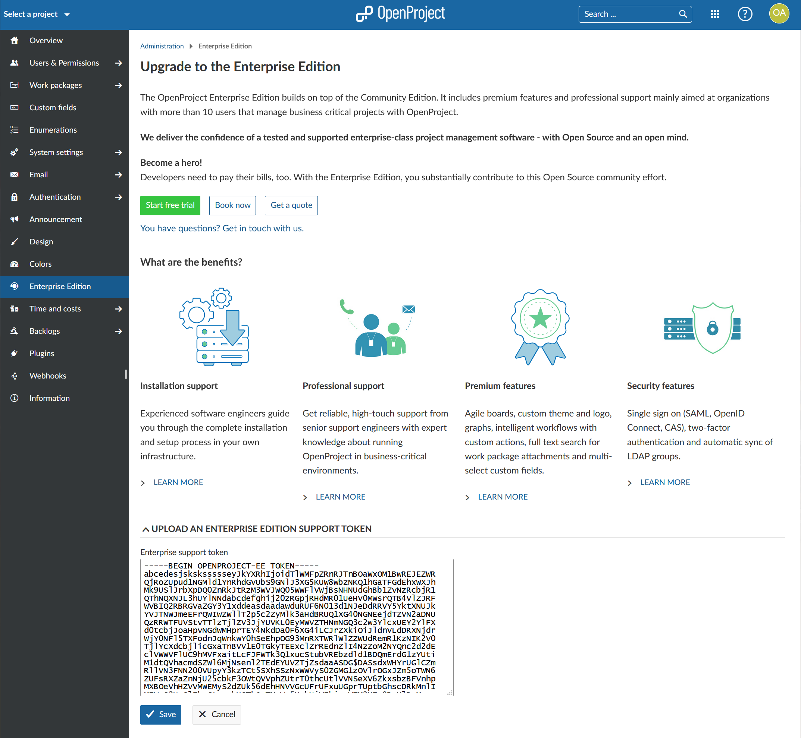
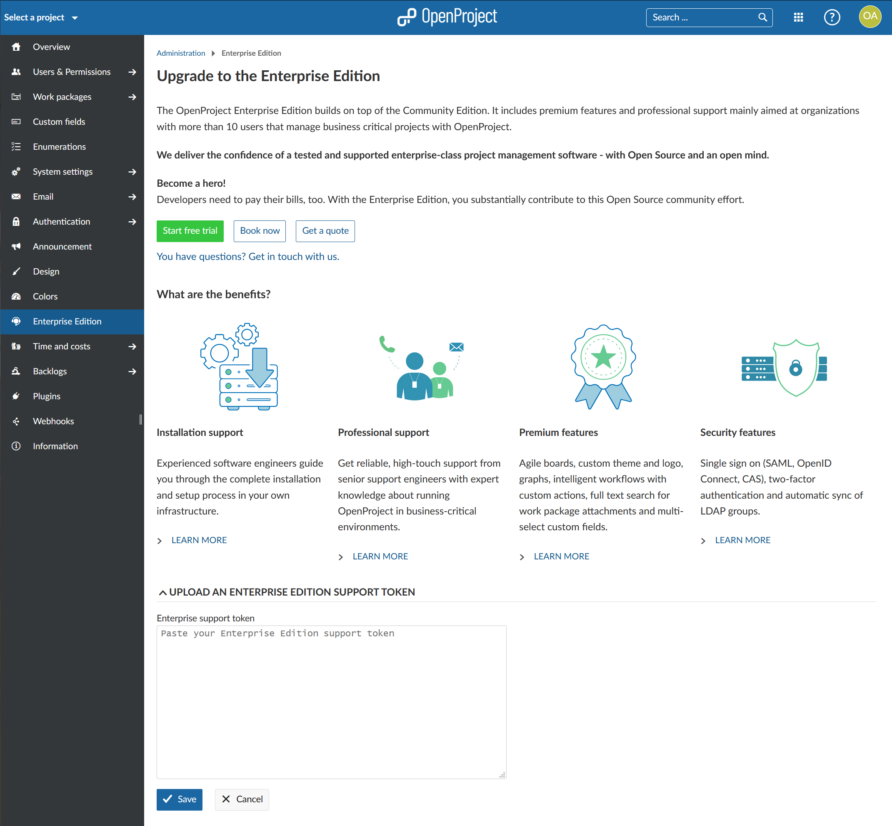

The OpenProject Enterprise on-premises edition builds on top of the Community edition.
In order to upgrade your OpenProject Community edition to the Enterprise on-premises edition, sign into your OpenProject environment with an administrator account.
Click on your user avatar in the upper right corner (1) and select Administration from the dropdown menu (2).

Next, select Enterprise Edition from the menu items (3).

Do you already have an Enterprise on-premises token?
Yes: Then you can proceed entering your token as described below.
No: Then you will need to order your Enterprise on-premises token or request a trial token first.
In the Enterprise on-premises edition section, copy and paste the full content of your Enterprise on-premises support token into the input field and press the blue Save button.

Your Enterprise on-premises edition is now active.
If you want to order the Enterprise on-premises edition click on the + Order Enterprise Edition button shown on the page. You can also request a trial token to test the premium features included in the Enterprise on-premises edition.

Once you purchased an Enterprise on-premises edition token or received a trial token you can activate it by pasting the token in the designated area of the Enterprise Edition section.